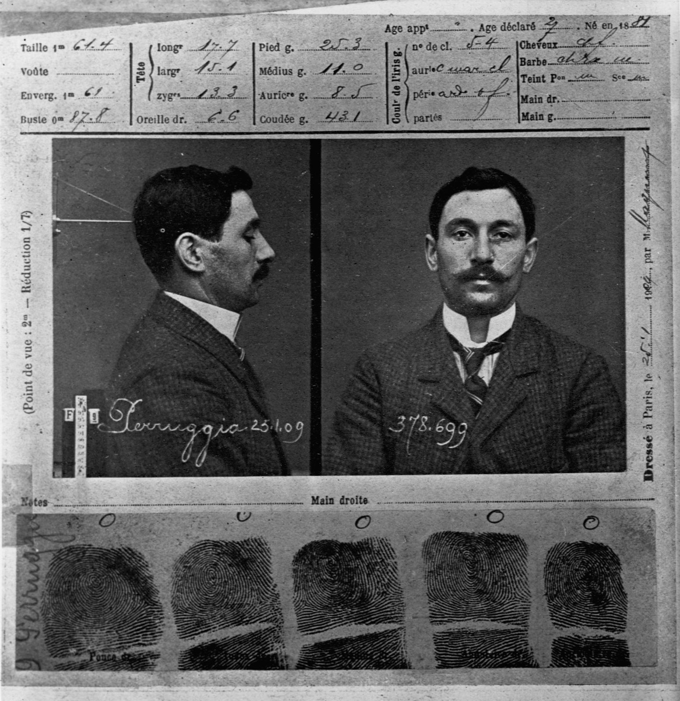

모나리자는 어떻게 가장 유명한 그림이 되었을까? — 1911년 루브르 도난 사건이 만든 명성
"모나리자야 원래 세계에서 제일 유명한 그림이니까."
루브르에서 사람이 가장 많이 몰리는 곳은 모나리자 앞입니다. 2019년 기준으로 해마다 1,020만 명쯤이 이 그림을 보고, 줄을 선 끝에 한 무리가 그림 앞에 머무는 시간은 30초 남짓입니다[1]. 이 북적임을 보면 처음부터 그랬으려니 싶습니다.
그런데 이 그림의 유명세에는 날짜가 박혀 있습니다. 1911년 8월 22일 화요일, 루브르에서 그림을 베껴 그리던 화가 루이 베루가 모나리자를 스케치하러 살롱 카레에 들어섰습니다. 그림이 있어야 할 자리는 비어 있었습니다. 경비들은 사진관에 촬영하러 보냈을 거라고 답했고, 몇 시간 뒤에야 그림이 사진관에도 없다는 사실이 드러났습니다[2]. 그림은 전날, 루브르가 문을 닫는 월요일에 사라졌습니다[1].
가져간 사람은 바로 그 그림에 씌울 유리 상자를 짰던 일꾼이었습니다. 그리고 결정적으로 — 모나리자를 세계에서 가장 유명한 그림으로 만든 것은 붓이 아니라, 그 손이 남긴 빈 벽이었습니다.
물론 그전에도 이름난 그림이었습니다. 다만 '전문가들이 아는 걸작'과 '누구나 아는 얼굴' 사이에는 거리가 있었고, 그 거리를 단번에 좁힌 것이 2년 4개월 동안의 실종이었습니다.
휴관일 아침, 흰 작업복
범행 경위는 자료마다 조금씩 다릅니다. 널리 퍼진 이야기는 범인이 일요일 저녁 루브르에 들어가 창고에 숨어 밤을 보냈다는 것입니다[3]. 반면 범인이 1913년 피렌체에서 붙잡힌 뒤 한 진술에 따르면, 그는 월요일 아침 7시쯤 다른 작업자들이 드나드는 문으로 들어갔습니다. 박물관 일꾼들이 입는 흰 작업복 차림이어서 다른 인부들과 구별되지 않았습니다[4].
그 뒤의 줄거리는 대체로 같습니다. 휴관일이라 전시실은 비어 있었습니다. 그는 살롱 카레 벽의 쇠못 네 개에 걸린 그림을 들어 내려 가까운 직원용 계단으로 옮겼고, 거기서 보호 상자와 액자를 떼어 계단참에 숨겼습니다. 흔히 작업복 속에 그림을 감추고 나갔다고들 하지만, 그의 키는 160cm 남짓이고 그림은 약 53×77cm여서 그렇게는 어려웠으리라는 반론도 있습니다[4]. 잠긴 문 앞에서 문손잡이를 뜯어내려 애쓰고 있을 때, 그를 갇힌 동료 직원으로 여긴 배관공이 문을 열어 주었습니다[3].
그 뒤 26시간 동안 아무도 그림이 없어진 줄 몰랐습니다[5]. 루브르는 촬영이나 손질을 위해 그림을 떼어 가는 일이 잦았기 때문입니다[3]. 휴가 중이던 관장은 평소 "모나리자를 훔친다는 건 노트르담 성당의 탑을 훔칠 수 있다고 생각하는 것과 같다"고 큰소리쳤다고 전합니다[4].
유리 상자를 짠 사람
범인은 이탈리아에서 건너온 빈첸초 페루자였습니다. 루브르는 그를 '루브르에서 일했던 유리공'이라고 소개합니다[6]. 그는 1908년 파리로 와 잠시 루브르에서 그림을 청소하고 액자를 손보았습니다. 일부 작품을 위한 튼튼한 보호 상자도 짰는데, 모나리자의 것도 그중 하나였습니다. 그 상자를 몇 분 만에 열 줄 아는 사람이었던 셈입니다. 도난이 일어났을 때 그는 이미 루브르 일을 그만둔 상태였습니다[4].

프랑스어판 위키백과는 그가 맡았던 일을 '주요 작품을 반달(vandale)로부터 지키려고 유리를 씌우는 작업'으로 적습니다[2]. 훼손을 막으려고 세운 유리벽을, 그 벽을 세운 손이 가장 먼저 넘은 것입니다.
수사는 그를 바로 눈앞에 두고도 비껴 갔습니다. 계단에서 발견된 액자에는 엄지 지문 하나가 남아 있었습니다. 파리 경찰의 알퐁스 베르티옹은 그날 일한 루브르 직원 257명의 지문을 받았습니다[5]. 페루자는 전과가 있어 경찰 서류에 지문과 사진이 있었지만, 대조할 명단에서 그의 이름이 빠졌습니다. 경찰은 그의 셋방을 두 번이나 찾아가 캐물었고, 한 형사는 그림이 숨겨진 탁자에 기대어 보고서를 썼다고 합니다[4].
빈 벽을 보러 온 사람들
루브르는 조사를 위해 일주일 동안 문을 닫았습니다[1]. 다시 문을 열자 수천 명이 그림이 걸려 있던 빈 벽을 구경하러 왔습니다[3]. 루브르는 그 자리를 비워 둔 채였고, 몰려든 구경꾼 가운데에는 작가 프란츠 카프카와 친구 막스 브로트도 있었습니다[5]. 사람들은 그림이 아니라, 그림이 없는 자리를 보러 줄을 섰습니다.
신문은 그 빈자리를 쉬지 않고 채웠습니다. 프랑스의 화보 잡지 『릴뤼스트라시옹』은 이렇게 물었습니다.
"어떤 대담한 범죄자, 어떤 협잡꾼, 어떤 미친 수집가, 어떤 정신 나간 연인이 이 납치를 저질렀는가?"
— 『릴뤼스트라시옹』, 1911 (번역, History.com 재인용)[3]
사람들은 이 사건을 도둑질보다 '납치'로 받아들였습니다. 신문들은 제보에 사례금을 내걸었고, 2년이 넘도록 경찰과 언론에는 헛된 제보가 수백 건 쏟아졌습니다[4].
엉뚱한 사람도 붙잡혔습니다. 9월 7일, 시인 기욤 아폴리네르가 체포되어 일주일 동안 갇혔습니다. 그의 비서였던 제리 피에레가 1907년 루브르에서 작은 조각상들을 훔쳤고, 그중 하나를 최근 신문사에 돌려보낸 일이 빌미가 됐습니다. 아폴리네르는 피에레에게서 조각상을 산 적이 있는 친구 파블로 피카소의 이름을 댔고, 피카소도 불려 가 조사를 받았지만 두 사람 모두 혐의를 벗었습니다[7].
트렁크 속 2년, 피렌체의 호텔 방
그사이 그림은 파리의 셋방에 있었습니다. 페루자는 바닥이 이중으로 된 트렁크에 그림을 넣어 두었습니다[3]. 도난 직후 루브르의 한 큐레이터는 이렇게 이름난 그림은 처분하기가 너무 어려우니 장난꾼이나 훔쳤을 것이라고 말했는데[5], 그 말은 절반쯤 맞았습니다. 페루자가 런던에서 미술상 조지프 듀빈에게 그림을 팔려다 비웃음만 샀다는 사실이 나중에 재판에서 드러났습니다[4].
페루자는 이탈리아 신문에 난 골동상의 광고를 보고 그림을 기차에 싣고 이탈리아로 건너갔습니다[4]. 1913년 12월, 피렌체에서 '레오나르도'라는 가명으로 화상 알프레도 제리에게 연락했고, 제리는 우피치 미술관 관장 조반니 포지를 불렀습니다. 두 사람은 페루자가 묵던 호텔 방에서 그림을 확인한 뒤 사들이는 대신 신고했고, 페루자는 그 호텔에서 체포되었습니다[3].
그림은 우피치에서 2주 넘게 전시된 뒤 1914년 1월 4일 루브르로 돌아왔습니다[1].
페루자는 나폴레옹이 이탈리아에서 빼앗아 간 그림을 되찾으려 했다고 말했습니다. 그러나 모나리자는 나폴레옹이 태어나기 250년쯤 전에 레오나르도가 직접 프랑스로 가져간 그림이었습니다. 게다가 도난 넉 달 뒤 페루자가 아버지에게 보낸 편지에는 파리에서 한몫 잡겠다는 말이 적혀 있었습니다[4]. 그래도 애국심 주장은 법정을 움직였고, 1년 15일이라는 가벼운 형이 내려졌습니다. 그는 7개월만 살고 나왔습니다[5].
도난 전의 모나리자는 얼마나 유명했나
그렇다면 도난 전의 모나리자는 무명이었을까요. 그렇지는 않습니다. 1878년 여행안내서 『베데커』는 이 그림을 "루브르에서 가장 이름난 레오나르도 작품"이라 불렀습니다. 1910년 미국 잡지 『레이디스 홈 저널』은 아예 "세계에서 가장 유명한 초상화"라고 썼습니다[1].
그런데 같은 자료는 1911년의 모나리자가 일반 대중 사이에서는 아직 대중적이지 않았고, 대중보다 지식인들이 더 잘 아는 그림이었으며, 20세기 전까지는 높이 평가받는 여러 작품 가운데 하나였다고 정리합니다[1]. 도난 소식을 처음 전한 워싱턴포스트가 모나리자 대신 「모나 반나」라는 다른 소묘의 사진을 실은 일은 그 거리를 잘 보여 줍니다[5]. 신문사조차 얼굴을 헷갈릴 만큼, 모나리자는 아직 '누구나 아는 얼굴'이 아니었습니다.
도난과 회수는 세계 곳곳에 보도되었고, 이 그림을 알아보는 대중이 크게 늘었습니다. 20세기 내내 모나리자는 대량 복제와 상품, 풍자와 추측의 대상이 되었고, "300점의 그림과 2,000개의 광고"에 복제되었다는 말까지 나왔습니다[1].
숫자보다 중요한 게 하나 있습니다. 많은 사람이 이 얼굴을 처음 함께 들여다본 곳은 그림 앞이 아니라 신문 지면과 빈 벽 앞이었습니다. 무엇이 사라졌는지 확인하려고, 사람들은 비로소 그 얼굴을 외운 셈입니다.
'가짜 여섯 점' 이야기는 믿을 만한가
이 사건에는 더 그럴듯한 뒷이야기가 붙어 있습니다. '발피에르노 후작'이라는 사기꾼이 위작 화가에게 복제품 여섯 점을 그리게 하고, 페루자를 시켜 진품을 빼낸 뒤 복제품을 미국 구매자들에게 진품이라 팔았다는 이야기입니다[2]. 하지만 근거는 1932년 『새터데이 이브닝 포스트』에 실린 칼 데커 기자의 기사 하나뿐입니다. 그 밖에는 발피에르노가 실제로 있었다는 증거조차 없고, 데커는 기사에 살을 붙이기로 이름난 기자였으며, 팔렸다는 복제품은 한 점도 발견되지 않았습니다[8]. 사실로 다루기에는 근거가 너무 얇습니다. 확실한 것은 페루자가 그림으로 끝내 돈을 벌지 못했다는 정도입니다[4].
유리 뒤로 들어간 그림
페루자가 짰던 유리 상자는 그 뒤로 점점 두꺼워졌습니다. 1956년 12월 30일, 볼리비아에서 온 우고 웅가사 비예가스가 루브르에서 모나리자에 돌을 던졌습니다. 유리가 깨졌고, 왼쪽 팔꿈치 근처의 물감 한 점이 떨어져 나갔습니다[1]. 그해 이보다 앞서 산성 물질 공격이 있었다는 이야기도 널리 퍼져 있지만, 영어판 위키백과는 대신 몇 해 전 한 남자가 면도날로 그림을 그었다고 적는 등 기록이 엇갈립니다[1].
1956년의 공격 이후 모나리자는 방탄유리 뒤에 놓였고, 그 뒤의 공격에서는 그림이 다치지 않았습니다. 1974년 도쿄 국립박물관 전시 때 한 여성이 붉은 페인트를 뿌렸고, 2009년에는 한 러시아 여성이 루브르에서 산 도자기 찻잔을 던졌습니다. 2022년에는 휠체어를 탄 여성으로 변장한 남성이 유리에 케이크를 던졌고, 2024년에는 환경 단체 활동가 두 사람이 수프를 끼얹었습니다[1]. 지금 그림은 2005년부터 전시실 한가운데의 보호 유리 상자 안에 홀로 걸려 있습니다[6].
'반달리즘'이라는 말이 생긴 사연
작품을 부수는 짓을 흔히 반달리즘이라고 부릅니다. 이름은 고대 게르만족의 한 갈래인 반달족에서 왔습니다. 반달족은 455년 가이세리크 왕을 앞세워 로마를 약탈했고, 이 일로 '까닭 없는 파괴'와 짝지어졌습니다[9].
그러나 이 말이 생긴 것은 5세기가 아니라 18세기 말입니다. 1794년 블루아의 주교 앙리 그레구아르가 프랑스 혁명 뒤 벌어진 예술품 파괴를 가리키려고 '방달리슴(vandalisme)'이라는 말을 지었고, 이 말은 곧 유럽 전역으로 퍼졌습니다[9]. 그가 낸 보고서의 제목은 「반달리즘이 저지른 파괴와 그것을 억누를 방법에 관한 보고」였습니다[10].
눈여겨볼 점이 둘 있습니다. 하나는 반달족이 실제로 다른 침입자들보다 더 파괴적이었는지는 분명하지 않다는 것입니다. 로마를 이상화한 계몽주의 시대의 시선이 그들에게 파괴자의 이름을 덧씌웠고, 그레구아르의 신조어가 그 이미지를 굳혔습니다[9]. 다른 하나는 이 말이 처음부터 '지키자'는 쪽의 말이었다는 것입니다. 그레구아르는 1794년 국민공회에 낸 보고서 세 편에서 예술품과 건축물, 비문, 책과 필사본을 더 보호해야 한다고 주장했고, 문화재 보존이라는 생각을 연 사람 가운데 하나로 꼽힙니다[11].
모나리자를 둘러싼 유리는 그 생각의 후손입니다. 반달을 막으려고 씌운 유리를 바로 그 유리를 짠 사람이 열고 나갔고, 돌이 유리를 깨자 더 두꺼운 유리가 들어섰습니다.
필자 한마디
"모나리자는 원래부터 가장 유명한 그림이었다"는 말은 절반만 맞습니다. 걸작이라는 평판은 이미 있었으니까요.
다만 '전문가의 걸작'이 '모두의 얼굴'이 되는 데에는 그림 바깥의 사건이 필요했습니다. 그 사건은 국제 음모가 아니라, 유리 상자 여는 법을 알던 일꾼 한 사람과 2년 넘게 비어 있던 벽이었습니다.
정리하자면 이렇습니다. 1911년 8월 21일, 루브르에서 보호 유리 작업을 했던 빈첸초 페루자가 휴관일에 모나리자를 들고 나갔습니다. 그림은 2년 넘게 파리의 트렁크 속에 있다가 1913년 12월 피렌체에서 나타났고, 1914년 1월 4일 루브르로 돌아왔습니다. 그사이 빈 벽과 신문 지면이 '지식인의 걸작'을 '누구나 아는 얼굴'로 바꾸어 놓았습니다. 그 뒤 거듭된 공격은 그림을 방탄유리 뒤로 밀어 넣었습니다.
다음에 '원래부터 유명한' 무언가를 만나면 한번 물어볼 만합니다. 그 이름은 언제, 무슨 일로 퍼졌을까요.
이 글은 일반적인 정보 제공을 위한 것입니다. 도난의 세부 경위와 형량, 1956년의 공격은 자료마다 엇갈리니 인용하실 때는 원 자료를 함께 확인하세요.
참고문헌
- 위키백과(영어). Mona Lisa (백과; 1911년 도난, 도난 전후의 명성, 1956년 투석과 이후 공격, 2019년 관람객 수). 링크 ↩
- 위키백과(프랑스어). La Joconde (백과; 1911년 8월 22일 발견 경위, 페루자의 유리 작업, 발피에르노 설 요약). 링크 ↩
- Andrews, E. The Heist that Made the 'Mona Lisa' Famous. History.com, 2016(2026 갱신) (해설 기사). 링크 ↩
- 위키백과(영어). Vincenzo Peruggia (백과; 1913년 피렌체 심문 진술, 수사 경과, 동기, 발피에르노 설의 근거). 링크 ↩
- McArdle, T. How the 1911 theft of the Mona Lisa made it the world’s most famous painting. Washington Post, 2019 (The Spokesman-Review 재게재, 해설 기사). 링크 ↩
- 루브르 박물관. From the 'Mona Lisa' to 'The Wedding Feast at Cana' — The Salle des États (공식 누리집). 링크 ↩
- 위키백과(영어). Guillaume Apollinaire (백과; 1911년 체포와 석방). 링크 ↩
- 위키백과(영어). Eduardo de Valfierno (백과; 칼 데커 1932년 기사의 신빙성). 링크 ↩
- 위키백과(영어). Vandalism (백과; 낱말의 기원). 링크 ↩
- 위키낱말사전(Wiktionary). vandalisme (프랑스어 어원과 그레구아르 보고서 제목). 링크 ↩
- 위키백과(영어). Henri Grégoire (백과; 1794년 국민공회 보고서와 문화재 보호). 링크 ↩